On Day 2 of the internship, I explored various software tools used in design, documentation, and multimedia workflows. I also learned the basic concept of Hyperspectral Imaging and its real-world applications in sensing and analysis technologies.
Improved the portfolio website design by adding advanced styling, typography improvements, responsive layouts, animations, and better documentation structure. Integrated navigation improvements and enhanced the professional appearance of the internship portfolio.
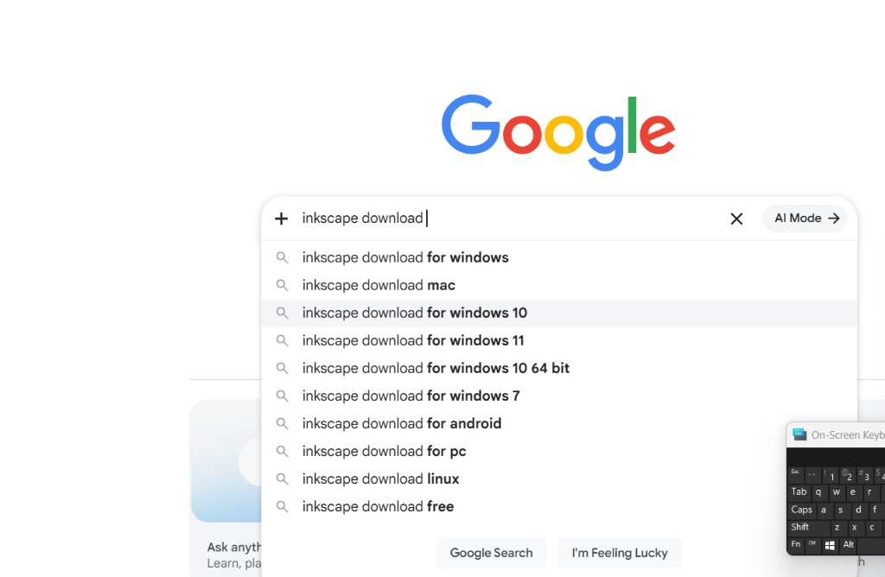
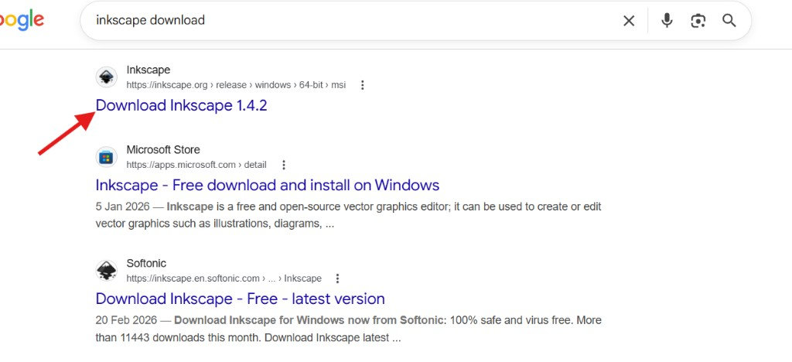
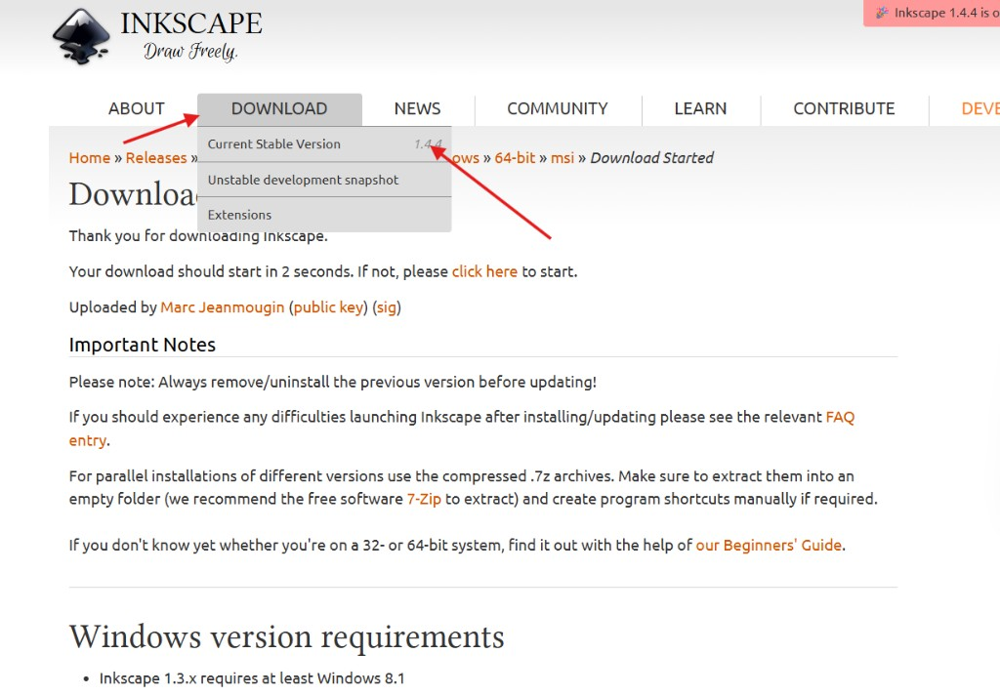
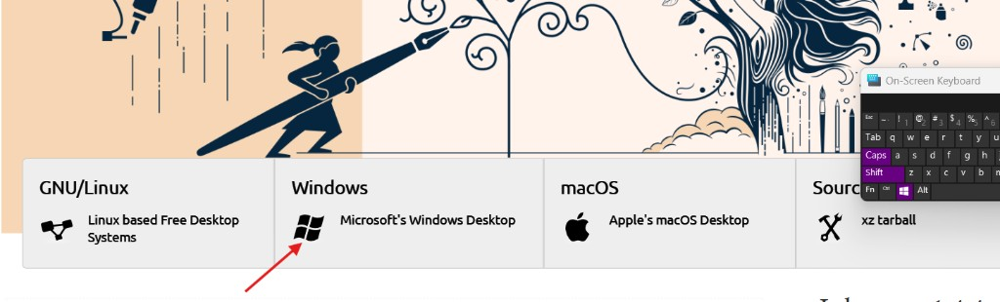
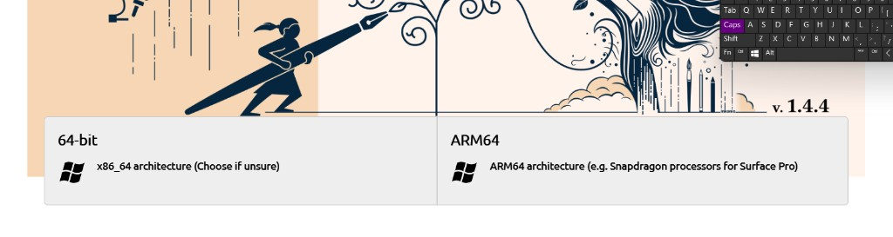
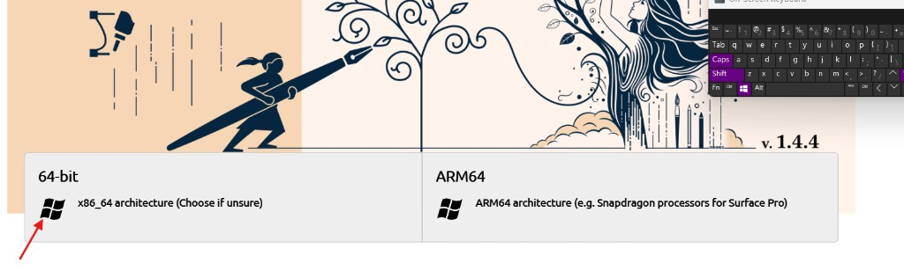
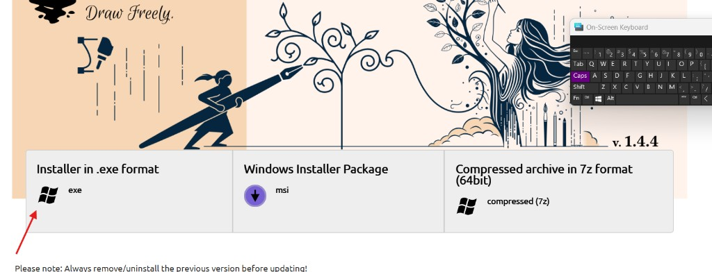
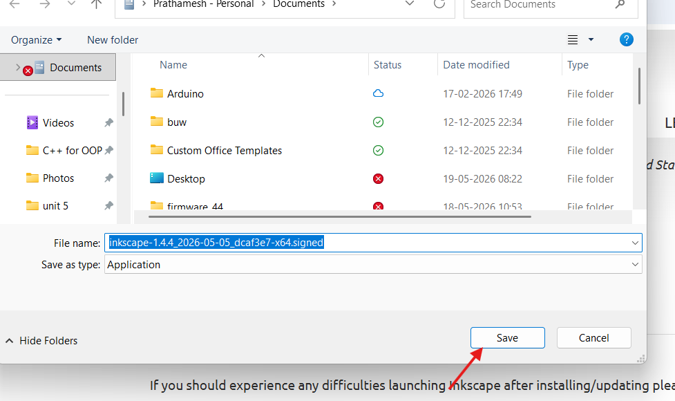
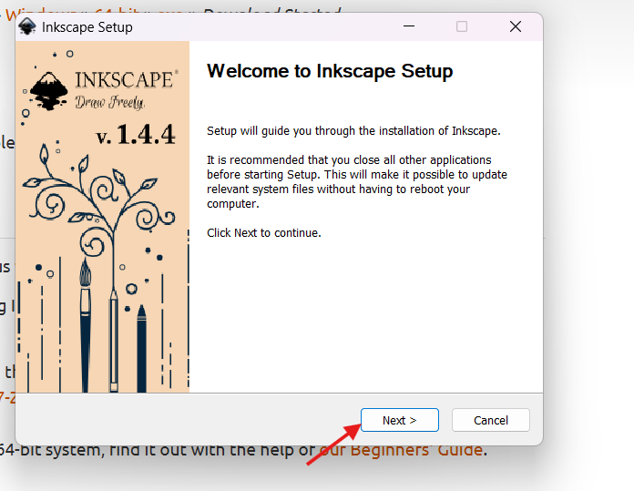
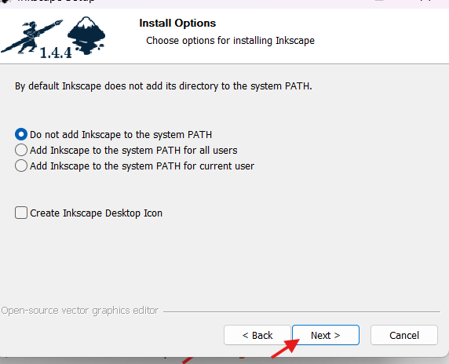
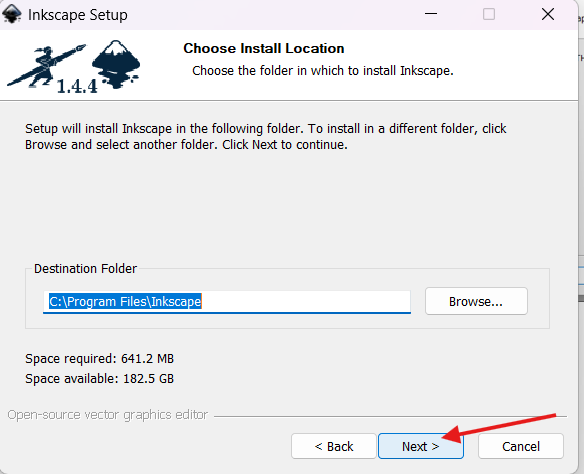
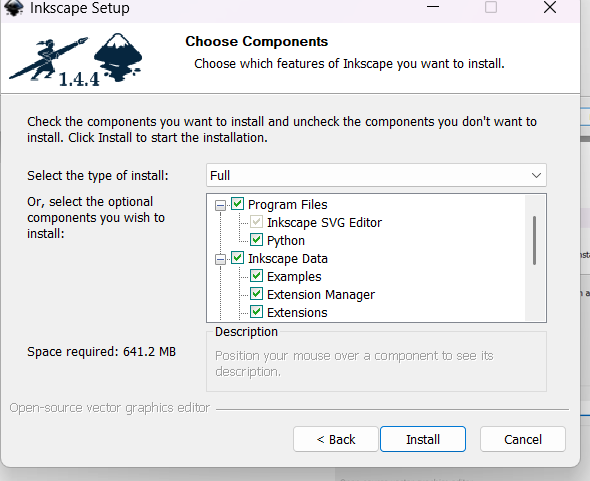
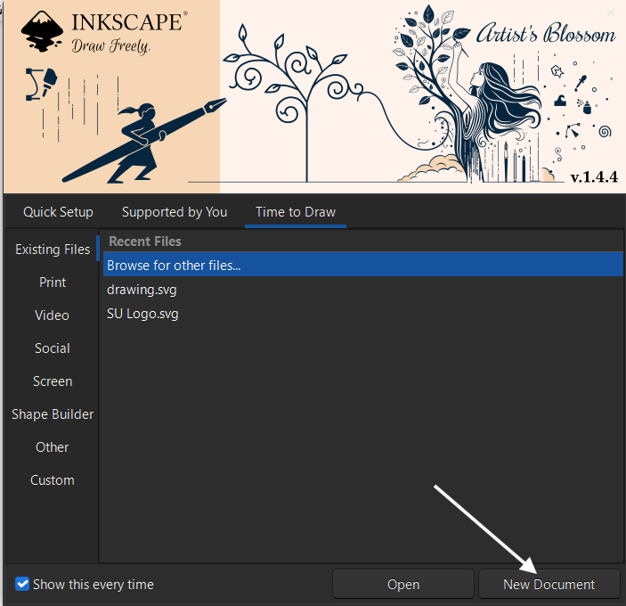
Day 2 helped me understand the importance of documentation, visual design, multimedia tools, and technical presentation. I also gained exposure to professional software tools used in engineering and digital workflows.